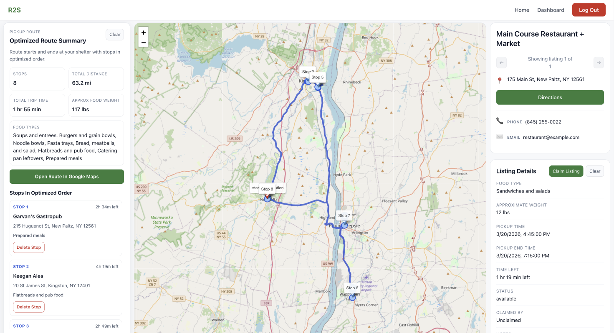

A full-stack platform connecting restaurants with surplus food to pantries that need it. Addresses food waste (80 billion lbs/year in US) and food insecurity (34M+ Americans) by eliminating coordination friction.
Created by Cole Namm, Aidan O'Donnell, and Shahid Khan for the SUNY New Paltz Spring 2026 Hackathon.
https://restaurants-to-shelters-hackathon-spring-xiam.onrender.com/

The Core Problem
Restaurants discard food daily while pantries struggle to source donations. No efficient way exists to match supply with demand, coordinate pickups, or optimize collection routes. This creates a massive coordination gap that prevents food from reaching people in need.
Product Solution
Real-time marketplace + auto-routing. Restaurants post donations in seconds (type, quantity, pickup window). Pantries find nearby food on an interactive map, claim listings, and instantly generate optimized pickup routes across multiple stops. Recurring listings automate daily donations. Socket.IO ensures everyone sees real-time availability without refreshing.
Key User Outcomes
Restaurants Save Time
Post food donations in seconds, not hours. One-click recurring donations for daily surplus. Real-time confirmation when pickups complete.
Pantries Get Efficient
Browse food on map, not spreadsheets. Claim donations instantly. System generates optimal routes—save 2+ hours per collection day. One-tap directions to multiple stops.
Impact
Frictionless platform eliminates the coordination barrier. More food reaches communities in need faster. Less waste, more impact.
Technical Achievement
Built a full-stack JavaScript app in 24 hours. Integrated Google Routes API for real-time route optimization, OpenCage for address geocoding, and Socket.IO for instant synchronization across all users. Secured with role-based JWT auth (restaurants can't claim, pantries can't post). Containerized with Docker for seamless team collaboration.
Key Challenge: Scaling Real-Time Coordination
Race conditions when multiple pantries claimed the same listing simultaneously. Solved with optimistic UI + server-side validation. Also tackled timezone complexities—pickup times needed to display correctly across all user timezones using ISO offset formatting.